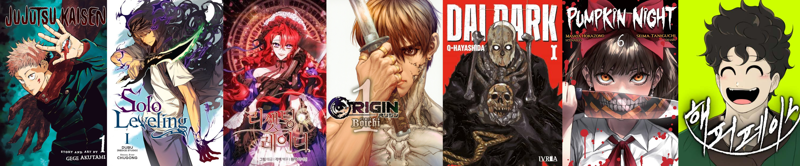

Hiperfijaciones:
Me gusta leer (lo que yo creo) una gran variedad de contenido orientado a las historias ficticias, como comics, mangas, webcomics, etc. Más allá de que sea porque me gusta, también lo hago por los estilos de dibujo que tengan las historias, ya que aunque dibujo poco, me gusta dibujar y me llama mucho la atencion el como diferentes artistas plasman las obras o como 1 artista aunque trabaje en otra obra es sumamente reconocible en base a su estilo de dibujo. Con esto busco en un futuro poder llegar a tener mi propio estilo, aunque por ahora está siendo dificil de lograr.
